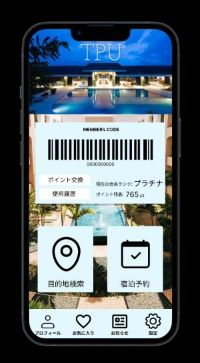

1.ホテルアプリのデザイン
講義内の課題にてfigmaを用いて製作したホテルの会員アプリのデザインです。
特に対象層を考えずに製作しましたが、それもあってシンプルなものになっているのではないかと思います。
ホーム画面こそ彩りがありますが、他の画面は色がなさすぎるかもという反省が残っています。
figmaのプレビュー2.映像課題その1「哀」
喜怒哀楽のどれかをテーマにするという課題です。今回は哀をテーマに選びました。
歩きスマホ中に転倒したことでスマホが破損し哀しみに暮れる、といった流れになっています。
表情や動きでいかに感情を表せるか、スマホの画面を見せずにどう破損したと思わせるか、の2点が製作上の課題でした。
余談ですが撮影過程でスマホを投げたのですが、フィルム（108円）が割れて買いなおす羽目になりました。
youtube3.映像課題その2「歩行」
「歩いてきて座る」という動作を複数のショットで繋いで作る課題です。
カメラのアングルがワンパターンになりすぎないよう、撮影中に頭を悩ませました。
最後の方向転換→座るは撮影のその場で思い付き、意外性があるかも？と思い急遽組み込んだという経緯があります。
あまり課題の指示から発展できず、映像のストーリー性が皆無となった点が反省点です。
youtube4.映像課題その3「アホのコイン集め」
コインを交えた簡単な動作のみが条件として出された課題です。また映像課題で唯一班を組み撮影した作品でもあります。
ストーリー性が強い作品のため、演技の自然さや映像の違和感のない繋ぎなど撮影・編集共にかなり苦労して製作しました。
撮影は比較的順調に進みましたが、順調すぎた故に使いたいカットが増え編集が難航を極めてしまいました。
この作品以降オチが気絶や死亡に固定されつつあるため、今後はオチをいかに変えていくかが課題なのかもしれません。
音量調整もかなり雑な印象を受けるのではないかと思います...
youtube5.GIF課題
2枚のgif画像で構成された作品です。かなり初期に製作しています。
製作日はライブの帰りにそのままの荷物で大学に来ており、ペンライトを持っていたことから思いつきました。
ペンライトを魔法の杖に見立てており、片方がもう片方の魔法で吹き飛ばされているイメージです。
この課題や映像作品の製作のおかげで、人並みには演技力が身についたと自負しています。
6.メディアプログラミング

掲載している作品の中では唯一1年の時に製作したものです。MP演習の最終課題として作られました。
新たなGoogleのロゴを作るという課題であり、簡単な図形のみでGoogleの文字を表現しています。
画像の右端にある赤い図形は画面内を飛び回り、端にぶつかると跳ね返り無限に動き続けます。
ロゴにおいてGとgの位置が逆になっていますが、これには深い意味はなくただの間違えです。